Aurora Cloud Storage
UX research | Brand Identity | UI design
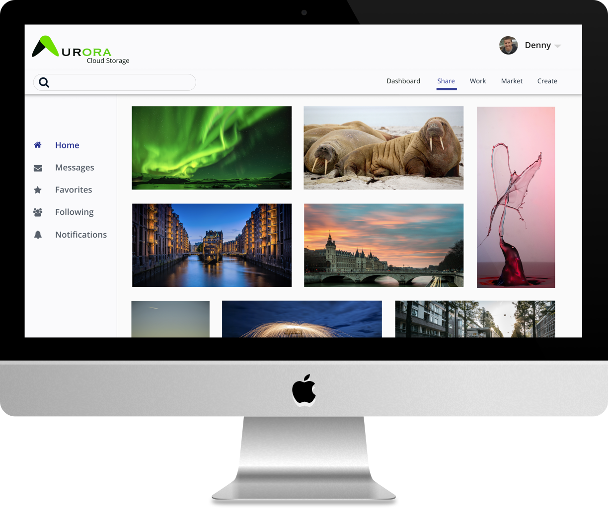Overview
The cloud storage market has become more popular in recent years and big name companies like Google, Microsoft and Dropbox have started to exert control over the market. I wanted to create a cloud storage platform that would function as a workspace rather than a file storage and sharing platform
Problem
Cloud storage platforms tend to only provide users with some of the features that they desire. This causes users to utilize multiple cloud storage platforms to accomplish their daily tasks.
Solution
Design a cloud storage platform that functions as a workspace giving users the ability to create, store, organize and share content with others as well as using a real-time collaboration space to work with other users.
UX Research
Competitive Analysis
Analysis of three competitors in the cloud storage market, Evernote, Dropbox and Google Drive found that Aurora had to differentiate itself from the competition by being a workspace and share space for users rather than just an online storage area.
Surveys
Understanding how people used their current cloud platforms along with complaints sand desired features laid the ground work for building the platform. Below are my key findings.
Complaints
64.3% limited storage space
14.3% limited features
14.3% slow upload speeds
Desired Features
50% real time collaboration
33.3% sharing space
33.3% create content
Usage
85.7% used two or more cloud platforms
7.1% used five or more cloud platforms
Satisfaction
85% rated their cloud platforms 4 or higher score out of a possible 5.
User Personas
Ryan | Super User
Ryan uses almost all of the features of a cloud storage platform on a daily basis. Ryan wants a single cloud storage platform that fits all his work and personal needs.
Megan | Business User
Megan uses only a few features of a cloud storage platform but relies heavily on those features. She wants fast upload speeds, large amount of storage space, and real-time collaboration that would save her time and money.
Information Architecture
User stories were constructed based on new and the returning users. The stories where sorted into high, medium and low priority to help determine the features to be included in the cloud platform. After reviewing the user stories the main features to include were creating content, real-time collaboration and a sharing space for posting projects or portfolios.
When developing the user flows I wanted to make them similar to other cloud storage platforms, so new users did not have a big learning curve when using this platform.
Branding
Naming
The name of the cloud storage platform I decided on was Aurora. Aurora is the ancient Roman goddess of the dawn and in meteorology is a luminous phenomenon that consists of streamers or arches of light appearing in the upper atmosphere of a planet's magnetic polar regions and is caused by the emission of light from atoms excited by electrons accelerated along the planet's magnetic field lines.
Logo
I wanted the logo to symbolize the interaction of people and ideas on the site. I also wanted to integrate the logo within the word Aurora if possible. I contemplated two different fonts for the logo, Silom and Copperplate. I ended up going with Copperplate because I felt that it was a nice contrast from the roundness of the abstract letter a in the logo. For the color palette I leveraged the colors found in the aurora.
UI Design
Wireframes
Now that all the user research has been collected the next step was to organize the content to build a great user experience. Keeping the landing page and create account pages clean and easy to navigate was a priority. The dashboard was designed to be similar to other cloud platforms to limit the learning curve of new users. The sharespace page was designed to showcase the photos and projects of the user.
 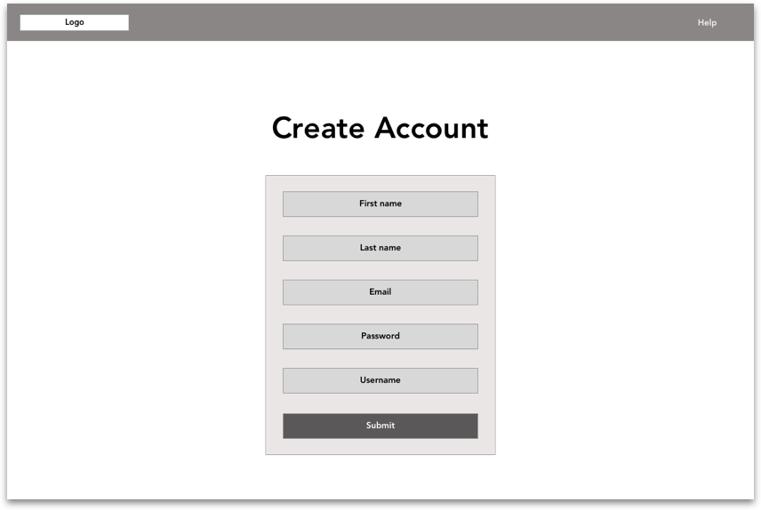
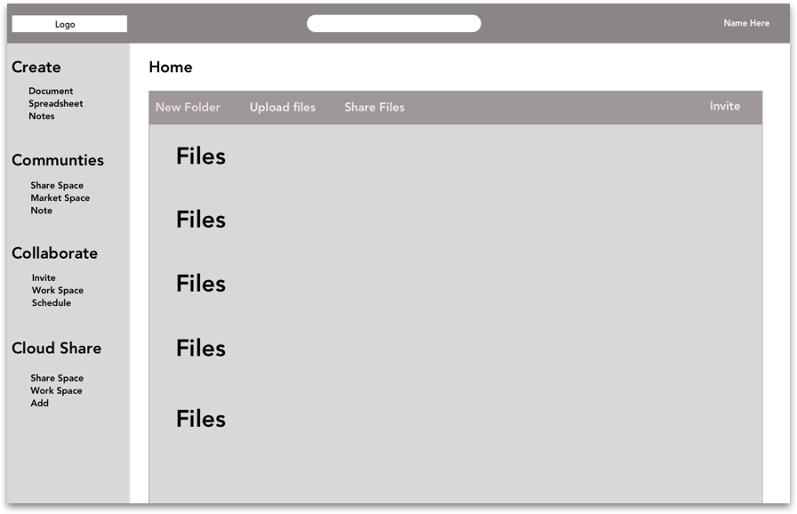
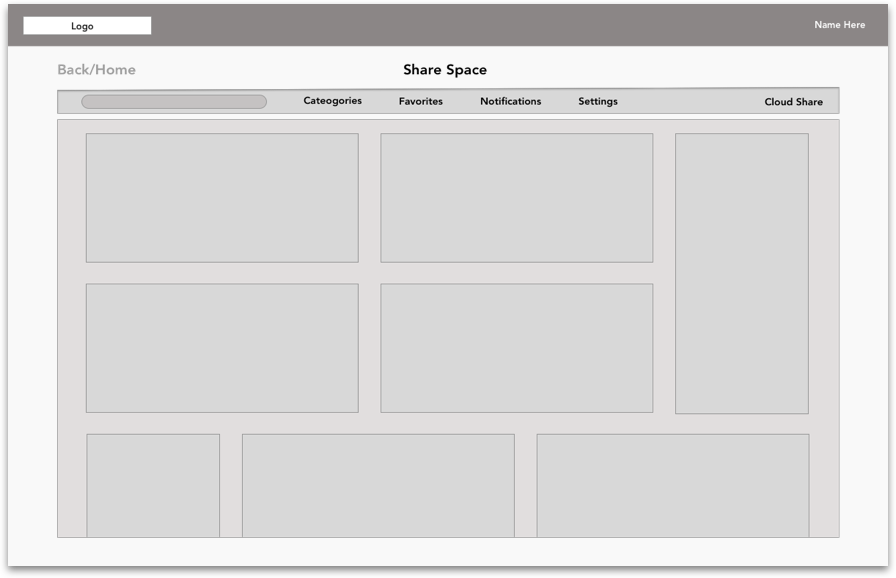
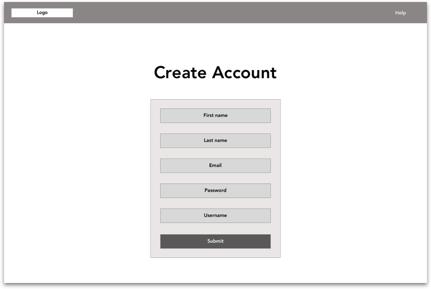
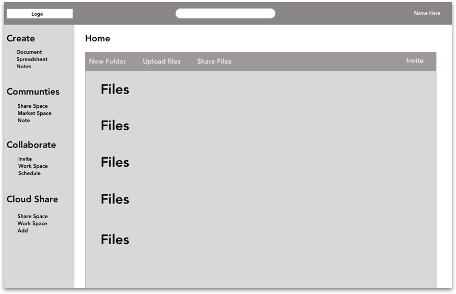
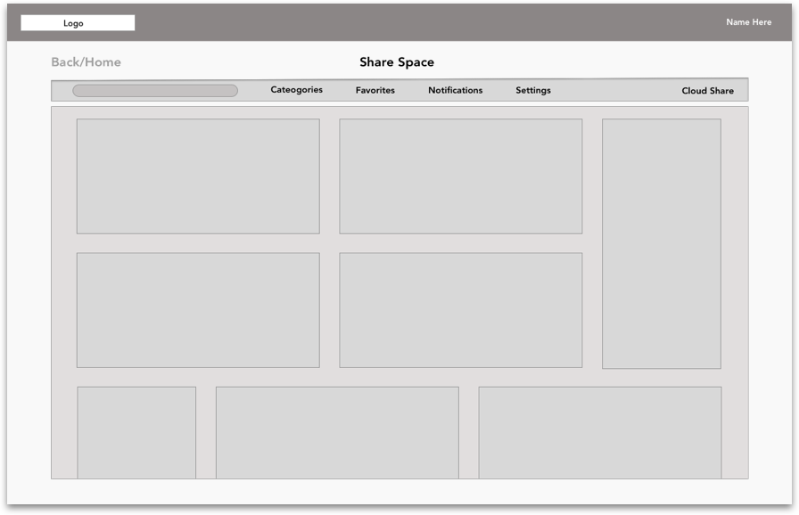
User Testing
User testing on the wireframes validated that the current framework of the dashboard and sharespace screens were easy for the users to navigate. The next step was to transform the wireframes into mockups for more user testing.
1st Iteration
My first mockup iteration experimented with using an image for the background. I tried multiple images and finally decided on picture of a dawn sunrise and a center aligned call to action.
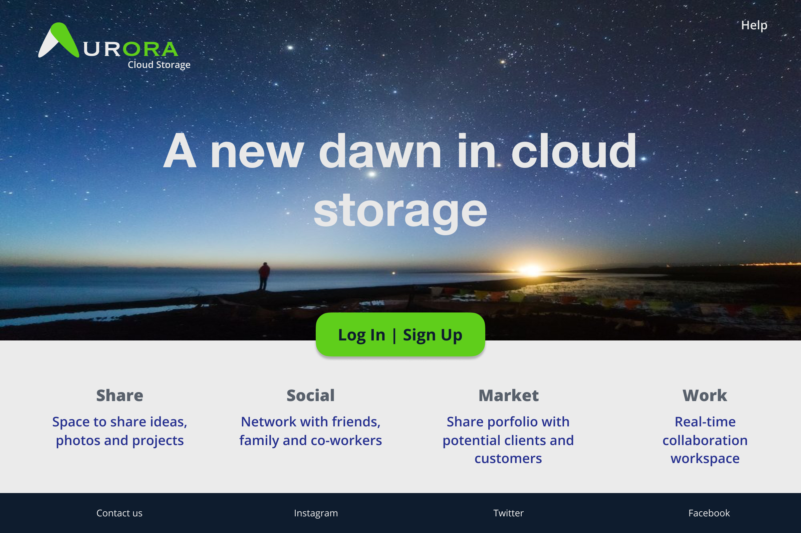 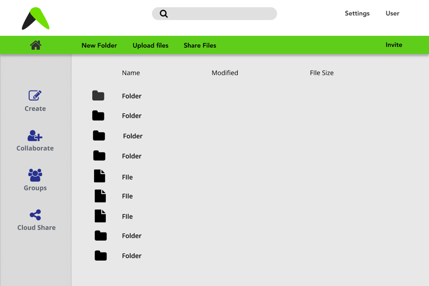A/B Test Typography
Preference testing was conducted on typography and based upon the results the typography was changed to an easy to read font. The reason for this change was because users are going to spend long periods of time on the site and they didn’t want to be squinting and trying to decipher unusual fonts. Preference testing also showed that users preferred the buttons with rounded corners instead of square.
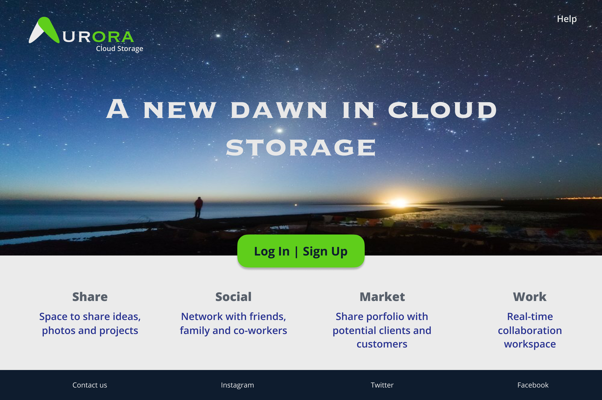2nd Itertation
After conducting a second round of testing users stated that they wanted a cohesive feel across all screens. I also decided to incorporate the background image on all the desktop screens giving the website a cohesive feel across all the screens. I also built out the landing page to include a more detailed explanation of the platform.
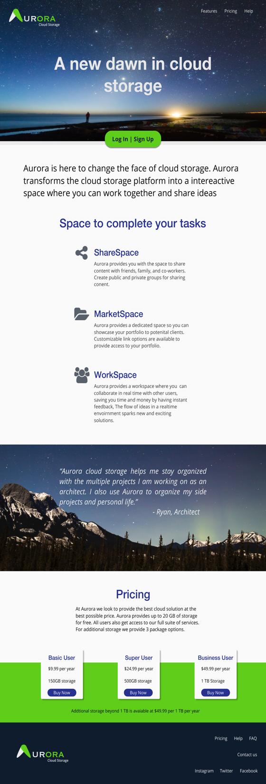 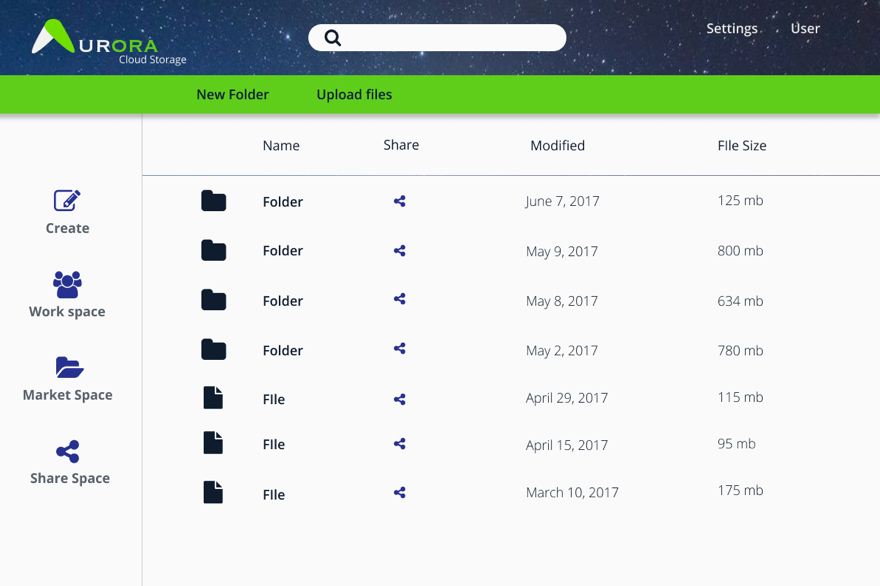 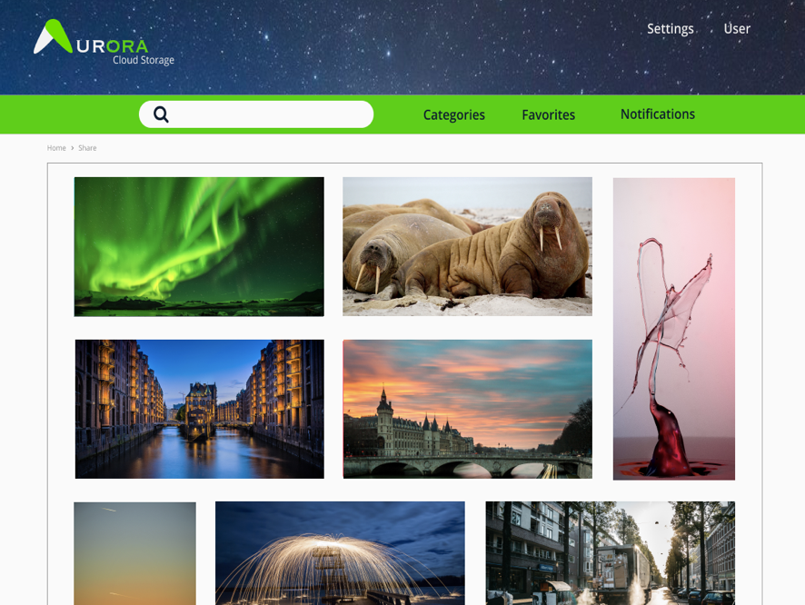Final Design
The final prototype changed the screens to a cleaner easy to navigate style as originally planned in the wireframing stage. I added a left side page navigation to the sharespace screens to provide similar navigation to the dashboard.
What I learned
I think that the finished design matched the feeling of the brand. I wanted it to feel similar to traditional cloud platforms for the user experience but different enough to make the user think they were in a exciting and innovative workspace.
My biggest doubts going into the project were basically where do I even begin designing a new cloud platform. As the project progressed I began to feel more and more comfortable in creating the cloud platform. After numerous revisions I feel that I now understand in much greater detail how all aspects of the process result in an effective user interface.
One part that surprised me was the amount of time I spent on the wireframes. It was definitely the most time consuming part of the project. It also was the point of the project that took the user research and created a blueprint for the project. After I got the wireframes to where I wanted them the rest of the project really fell into place and the design came a bit easier.
Every step from competitive analysis to multiple rounds of user testing all built on each other and helped me design while keeping the user in mind.